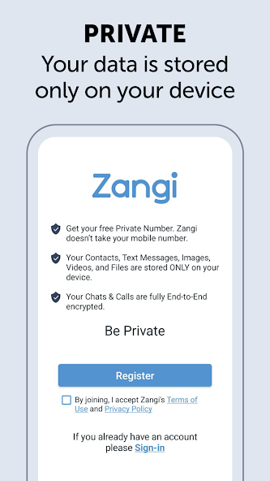

我装了 Zangi，注册连手机号都没要，聊了三天说点真话
第一人称上手测评：为什么 Zangi 反直觉地不问手机号、10 位私密号到底意味着什么、消息和隐私功能用起来什么感觉，以及 5 美元订阅值不值。
前阵子刷到 Zangi 的时候，我正被另一个通讯 App 烦着——每次换设备都得收一遍短信验证码，通讯录权限不给就不让加朋友，最离谱的是群聊里发张图被压缩成马赛克。抱着"再试一次说不定有不一样的"的心态，我从官网装了 Zangi。
说实话，装完第一眼我是懵的。
注册那五分钟，我反复确认了三次
打开应用，登录界面下方就一个 Register 按钮。点进去，同意条款，然后……就没然后了？没有手机号输入框，没有邮箱验证，没有任何"证明你是你"的环节。我甚至开始怀疑是不是下载错了版本，退出来重进了一次，确认安装包是从下载渠道拿的，流程还是一样。
填了个昵称（也是可选项，可以整个跳过），设了密码——这一步我特意多看了一眼，官方标注 optional，但我心里清楚，一个不问任何身份的系统，找回账号的凭据也不可能是什么常见的东西。设完密码点 Continue，系统直接弹了一串 10 位号码出来，格式像 XX-XXXX-XXXX。这就是我的全部身份了。

我当时第一反应是：这号丢了怎么办？
去zangi文档翻了翻才搞明白——这号就是一切，没有备用。换设备不能把现有账号"登录"上去，一号一机架构；没设密码就登出了，账号直接找不回来；私密号本身也不能改，不喜欢就只能注新号。反直觉吗？反直觉。但你细想就会发现，这套设计从头到尾就没打算让 Zangi 变成一个"实名通讯工具"，它从注册那一步就在说：你不需要留下任何可被追溯的痕迹。
注册完成后我花了半分钟把私密号截图存进相册，然后赶紧把密码也记了下来。这不是教程里的"建议"，这是我觉得最实在的操作。
用了三天，挑三个点说真感觉
消息体验：够用，有些地方惊喜
文字消息、语音条、图片视频，这些基础能力都有，没什么好说的。让我有点意外的是回复和转发的细节。
Android 上在消息上滑动一下就能快速引用回复，这个手势比长按菜单方便太多了，我现在回群里特定某条消息已经习惯直接滑。转发有明确的「forwarded」标识，接收方一眼就能看出来这不是你打的原话——这点我挺喜欢，至少诚实。当然，官方也老实说了：加密只管传输，不管接收方拿到后的动作，你发给别人的内容，对方本来就可能保存或转发。别对"绝对隐私"抱有不切实际的幻想。
消息可以无时限编辑和撤回，这点比我之前用的那个 App 强太多。上次在群里打错了联系人名字，过了快一小时才发现，长按消息点 Edit 直接改了，群里没人注意到。
隐私边界：做了很多，但也留了坑
Zangi 在隐私上做对了几件事：注册不问手机号、通讯录数据只在本地匹配不上传、私密号不进任何"找人"索引——你想找一个人，只能让他把号发给你，没有"可能认识的人"这种打扰。
但我也发现了两个让我心里打鼓的地方。
第一，举报是自动化的。 账号累计收到一定数量的举报，系统直接自动移除，不需要人工复核。官方说"对陌生人敞开号码有风险"，这话翻译过来就是：被恶意围举报的账号，真的可能被误封。我去设置里看了拉黑和举报的入口，倒是挺隐蔽的——从对方资料页下滑才能找到，不会误触。但反向想，要是有人真的想搞你，门槛并不高。
第二，拉黑做得太模糊。 对方被你拉黑之后，不会收到任何通知，官方刻意不提供"已被拉黑"的明确迹象。你能看到的只有四件事：看不到最后在线时间、头像不更新、消息永远单勾、呼叫打不通。四条全中大概率被拉黑，但也可能是对方关了状态或长期没上线。说实话，这套设计我能理解——保护拉黑方不被纠缠，但对被拉黑的那一方来说，体验确实有点别扭，会反复自我怀疑。
订阅：免费档够用，付费点集中在"留不留得住"
Zangi 免费就能用，核心的文字、语音、通话、群组功能都不设限。Premium 每月 5 美元，我研究了一下它到底值不值，结论是：除非你有很明确的需求，不然不用急着开。
Premium 主要卖三样东西：秘密通信三件套（隐藏会话、阅后即焚、紧急清空码）、原画质传输、千人语音会议。前两者是官方定义 Premium 的主菜，集中在"你不想留下痕迹"这件事上；原画质传输是最实用的付费点，免费档发图会压缩，开了 Premium 之后不限大小、不限格式。
我自己的判断标准很简单：你需不需要让某些对话"不留痕迹"？需要就开，不需要的话免费档完全够用。
适合谁，不适合谁
适合 Zangi 的人，大概是这几类：不想留下身份痕迹的、对消息压缩忍无可忍的、群聊里需要大量引用回复的。它的设计哲学就是"极简身份 + 够用功能"，注册环节就能把路人和目标用户筛选得很清楚——嫌麻烦的人直接就走了。
不适合的人也很明确：希望通讯录自动匹配加好友的、喜欢大群社交的、害怕操作太"反直觉"的。Zangi 不是微信也不是 Telegram，它从第一天就没打算讨好所有人。
最后说一句：我挺喜欢 Zangi 这种"把话说清楚"的态度。注册不问手机号是因为不想知道你是谁；不能找回账号是因为真的没存你的身份信息；举报自动处理是因为不打算投人工审核成本。每一个看起来别扭的设计背后，都有一个很直接的原因。用了三天，没发现什么大的惊喜，但也没踩雷——对于一个通讯工具来说，这已经是很高的评价了。
这套资料我同步在了 GitHub、Gitee、GitCode 三个代码托管平台上，国内访问推荐走 Gitee 或 GitCode 速度更快。